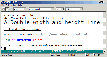
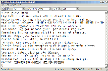
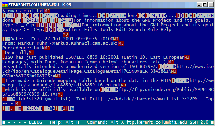
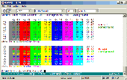
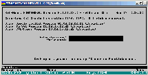

| 
| This screen illustrates new terminal-emulation features of
the GUI version of Kermit 95 2.0, K95G, including double-high/wide characters,
true underlining, and italics.
|

| This was one of the nicer BBS graphics we ran across in the
early days of K95, the Metropolis BBS in St Louis (the same picture was used
with permission on the back cover of the original K95 manual). The emulation
is ANSI.
|
| 
| This screen shot shows how K95 can display text in many
languages and scripts, even in a Console window. The emulation is VT320, the
terminal character-set is UTF-8, and the font is Andale Mono WT J. If you
look at the full size image you'll see West and East European Roman, Greek,
Cyrillic, Georgian, Korean, and other writing systems -- even Runes -- on the
same terminal screen.
|
|
| This shot illustrates URL highlighting. URLs are included in
a plain-text e-mail message. K95 highlights them automatically. If you
Ctrl-Click on a URL, K95 tells your browser to visit it. Note the first URL,
even though it is longer than the screen width and has wrapped to a second
line, is still recognized as a valid URL. Ctrl-Clicking on wrapped URLs works
too.
|
| 
| This picture shows what happens when the message from the
previous screen shot is loaded into the full-screen EMACS editor while K95's
terminal emulator is in debug mode. Control characters are shown in red (for
example, ESC is the same as Ctrl-[, so a red left bracket is an ESC).
Printable characters that are part of escape sequences are shown in reverse
video.
|
| 
| This screen illustrates K95's color palette. Console
applications are restricted to 16 colors, which correspond to the ANSI-format
coloration escape sequences used by BBSs (first screen above), Linux "color
ls", etc.
|
| 
| This screen shows how K95's VT320 emulator, by following the
VT220/320 specification and the ISO 4873 and 2022 standards, can show ASCII,
ISO 8859-1 accented letters, and line- and box-drawing characters on the same
screen.
|

| This is an IBM mainframe 3270 VM/CMS login screen from Temple
University. K95 does not yet include 3270 terminal emulation, but it is still
widely used to access IBM mainframes through external 3270 emulators such as
the Unix tn3270 program and various terminal servers.
|

| This is an ancient Heath-19 terminal "graphics" demo. It
looks a bit rough in Lucida Console, but that's only because it does not
contain the Heath-19 special graphics characters, which were not added to
Unicode until Unicode 3.1, and will take some time to find their way into
Unicode fonts such as Lucida Console and Courier New.
|


{kind=link}
{kind=link}
{kind=link}
{kind=link}
{kind=link}
{kind=link}